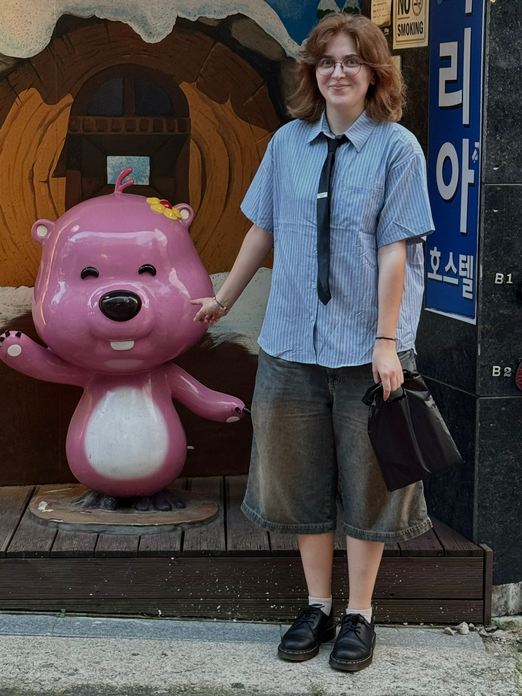
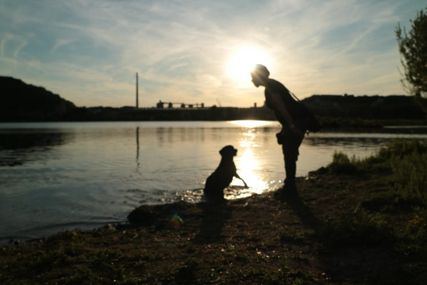
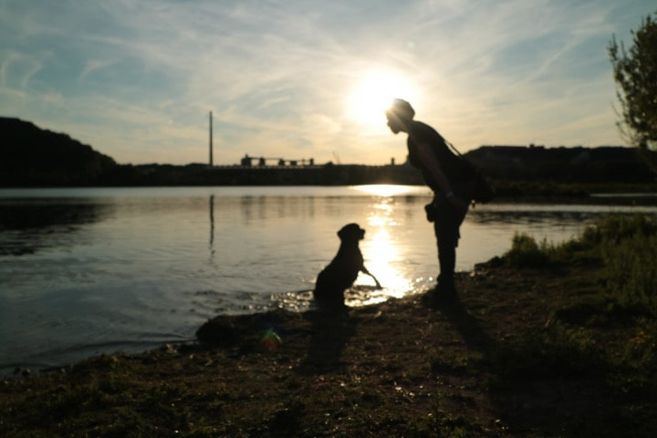

Hiya! ik ben Michelle of Mich als je wilt. neem eens een duik in mijn portfolio en kom achter mijn werk en persoonlijkheid

(web)design & coding
design
Storytelling
photography, graphic design, video editing

 

Ik vind het heel erg leuk om in mijn vrije tijd video edits te maken van mijn hobby's en interesses en dit doe ik dus al een aantal jaar. via youtube tutorials heb ik in after effects mijn weg helemaal geleerd.
iech zeg hoi allemaol, zoals eerder vernoemd ik ben Michelle. ben 22 jaar maar dat kan nog
veranderen, denk dat dit volgend jaar gebeurd. ik vind het leuk om verschillende programma's te
leren en ben dus een beginner in blender, unreal engine, photoshop. ik kan inmiddels goed overweg
met illustrator en voornamelijk after effects/premiere pro. websites coderen is helaas niet mijn
expertise.
ik vind het leuk om op veel verschillende ideeen te komen en deze ook weer op
verschillende manieren uit te werken, of dit nu posters, social media posts, videos of zelfs games
zijn je noemt het maar en ik ben bereid om eraan te werken!
ik vind dingen zoals gamen,
muziek luisteren, films kijken, knutselen en pokemon kaarten verzamelen leuk. ik ben gek op nijntje,
loopy, kpop, pochacco en mijn 2 katten misty en mercy!